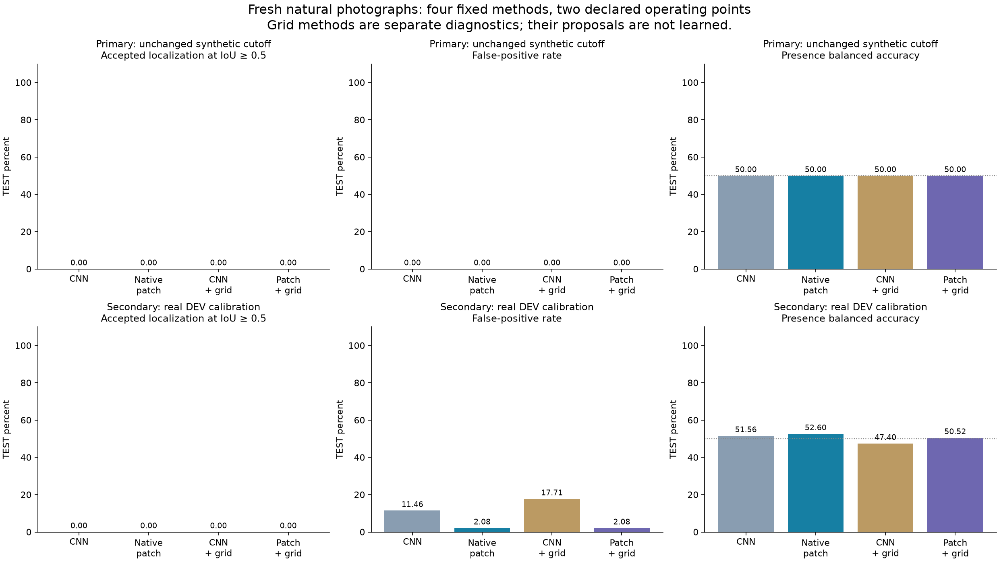
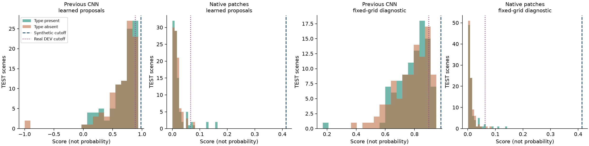

HyperNet v13 / natural-photo category transfer / one boxed reference per category
Real-photo category detection failed in this test.
No positive TEST photograph was correctly localized and accepted. The transferred primary rejects all 96 positive scenes. Real-photo calibration accepts 7/96 positive scenes, but still yields 0 correct accepted boxes, with 2/96 false alarms. A slightly above-chance presence balanced accuracy does not establish successful object localization or recognition.
At the unchanged synthetic cutoff, native-patch matching correctly localizes and accepts 0/96 positives (0.00%), with 0/96 false positives (0.00%). The previous CNN reaches 0.00% with 0.00% false positives.
Both primary methods have zero accepted localizations; their observed paired difference is +0.00 pp. Empirical resampling of these all-zero category outcomes is degenerate and cannot quantify an unseen-success rate or establish population equivalence.
The synthetic v12 result of 98.83% concerned separated 2D micro-pattern identity. This experiment asks whether another real photograph contains any instance of the reference's semantic category. Different pictures, object instances, backgrounds and appearance make this a substantially different task; the two percentages are not directly comparable benchmark scores. The model still uses its own synthetic-only CNN and analytic patch matching, with no natural-photo weight training or borrowed pretrained weights.
Try local reference enrollment and inspect every benchmark photo · Public code and earlier audited experiments
Two operating points, with their data budgets kept separate
Primary: transfer the v12 synthetic DEV cutoff unchanged, with no real-photo calibration labels. Secondary: use 96 additional real DEV photos (48 negatives) to set a pooled cutoff per method, accepting at most two DEV negatives. This changes the decision threshold only. It is not a one-photo-total-data claim, and it does not train the CNN. TEST labels select neither methods nor thresholds.

| Mode | Split | Method | Localized positives | Localized recall | False positives | Presence recall | Presence balanced accuracy | Proposal recall | Top-one IoU recall | AUROC | Single-box AP50 |
|---|
| Primary: unchanged synthetic cutoff | DEV | Previous CNN / learned proposals | 0/48 | 0.00% | 0/48 (0.00%) | 0.00% | 50.00% | 6.25% | 0.00% | 52.21% | 0.00% |
| Primary: unchanged synthetic cutoff | DEV | Native patches / learned proposals (primary) | 0/48 | 0.00% | 0/48 (0.00%) | 0.00% | 50.00% | 6.25% | 0.00% | 51.04% | 0.00% |
| Primary: unchanged synthetic cutoff | DEV | Previous CNN / fixed-grid diagnostic | 0/48 | 0.00% | 0/48 (0.00%) | 0.00% | 50.00% | 68.75% | 4.17% | 50.43% | 0.27% |
| Primary: unchanged synthetic cutoff | DEV | Native patches / fixed-grid diagnostic | 0/48 | 0.00% | 0/48 (0.00%) | 0.00% | 50.00% | 68.75% | 2.08% | 52.78% | 0.06% |
| Primary: unchanged synthetic cutoff | TEST | Previous CNN / learned proposals | 0/96 | 0.00% | 0/96 (0.00%) | 0.00% | 50.00% | 14.58% | 1.04% | 51.90% | 0.02% |
| Primary: unchanged synthetic cutoff | TEST | Native patches / learned proposals (primary) | 0/96 | 0.00% | 0/96 (0.00%) | 0.00% | 50.00% | 14.58% | 0.00% | 52.14% | 0.00% |
| Primary: unchanged synthetic cutoff | TEST | Previous CNN / fixed-grid diagnostic | 0/96 | 0.00% | 0/96 (0.00%) | 0.00% | 50.00% | 66.67% | 6.25% | 51.57% | 0.16% |
| Primary: unchanged synthetic cutoff | TEST | Native patches / fixed-grid diagnostic | 0/96 | 0.00% | 0/96 (0.00%) | 0.00% | 50.00% | 66.67% | 0.00% | 50.91% | 0.00% |
| Secondary: real DEV calibration | DEV | Previous CNN / learned proposals | 0/48 | 0.00% | 2/48 (4.17%) | 4.17% | 50.00% | 6.25% | 0.00% | 52.21% | 0.00% |
| Secondary: real DEV calibration | DEV | Native patches / learned proposals (primary) | 0/48 | 0.00% | 2/48 (4.17%) | 6.25% | 51.04% | 6.25% | 0.00% | 51.04% | 0.00% |
| Secondary: real DEV calibration | DEV | Previous CNN / fixed-grid diagnostic | 0/48 | 0.00% | 2/48 (4.17%) | 10.42% | 53.12% | 68.75% | 4.17% | 50.43% | 0.27% |
| Secondary: real DEV calibration | DEV | Native patches / fixed-grid diagnostic | 0/48 | 0.00% | 2/48 (4.17%) | 2.08% | 48.96% | 68.75% | 2.08% | 52.78% | 0.06% |
| Secondary: real DEV calibration | TEST | Previous CNN / learned proposals | 0/96 | 0.00% | 11/96 (11.46%) | 14.58% | 51.56% | 14.58% | 1.04% | 51.90% | 0.02% |
| Secondary: real DEV calibration | TEST | Native patches / learned proposals (primary) | 0/96 | 0.00% | 2/96 (2.08%) | 7.29% | 52.60% | 14.58% | 0.00% | 52.14% | 0.00% |
| Secondary: real DEV calibration | TEST | Previous CNN / fixed-grid diagnostic | 0/96 | 0.00% | 17/96 (17.71%) | 12.50% | 47.40% | 66.67% | 6.25% | 51.57% | 0.16% |
| Secondary: real DEV calibration | TEST | Native patches / fixed-grid diagnostic | 0/96 | 0.00% | 2/96 (2.08%) | 3.12% | 50.52% | 66.67% | 0.00% | 50.91% | 0.00% |
Each TEST method sees the same 96 positive and 96 negative photographs. Primary CNN and native-patch methods use exactly the same learned proposal roster. The two explicitly named grid diagnostics instead use 51 predeclared windows based only on image dimensions. They are not promoted primary methods or learned proposal improvements. A localized success must pass its cutoff and overlap any annotated same-category object at IoU ≥0.5. Presence metrics ignore box quality; proposal and top-one IoU recall ignore the cutoff. Single-box AP50 is not official COCO multi-detection, multi-IoU AP.
What the scores and regions reveal
Learned proposals cover 14/96 positive TEST scenes at IoU ≥0.5. The native matcher selects a correct top box in 0/96, even when its cutoff is ignored. Fixed-grid proposals cover 64/96, but their native matcher also needs accurate ranking; its top-one IoU recall is 0.00%. Changing only the threshold cannot recover a correct box that the matcher never selects.

Score overlap diagnoses ranking and calibration; it does not prove a specific internal cause. The primary's foreground fitting and outline registration were built for separated high-contrast shapes. Natural photos introduce textured backgrounds, touching objects, shading, occlusion and category variation that the synthetic curriculum did not teach. These results support both proposal-coverage and matching-transfer failures; they do not isolate CNN compression as their sole cause.
| Category | Reference foreground resolved | Reference patches | Mean CNN proposals / TEST scene | Proposal recall | Top-one IoU recall | Primary localized recall | Primary false positives |
|---|
| bird | True | 11 | 17.4 | 0.00% | 0.00% | 0.00% | 0.00% |
| bowl | True | 12 | 17.5 | 12.50% | 0.00% | 0.00% | 0.00% |
| bus | True | 12 | 19.2 | 37.50% | 0.00% | 0.00% | 0.00% |
| cake | True | 12 | 20.3 | 12.50% | 0.00% | 0.00% | 0.00% |
| car | True | 12 | 20.2 | 12.50% | 0.00% | 0.00% | 0.00% |
| cat | True | 12 | 19.4 | 37.50% | 0.00% | 0.00% | 0.00% |
| cup | True | 4 | 13.9 | 37.50% | 0.00% | 0.00% | 0.00% |
| dog | True | 12 | 22.1 | 12.50% | 0.00% | 0.00% | 0.00% |
| handbag | True | 12 | 19.9 | 0.00% | 0.00% | 0.00% | 0.00% |
| horse | True | 12 | 22.6 | 0.00% | 0.00% | 0.00% | 0.00% |
| toilet | True | 12 | 19.9 | 12.50% | 0.00% | 0.00% | 0.00% |
| train | True | 12 | 19.8 | 0.00% | 0.00% | 0.00% | 0.00% |
The diagnostic foreground flag only means the analytic extraction returned a region; it does not certify that it isolated the correct subject. Category rows use one fixed reference each, so a poor reference can affect every corresponding query.
Paired uncertainty
| Mode | Localized-recall contrast | Difference | 95% interval |
|---|
| Primary: unchanged synthetic cutoff | native_patch_minus_old_cnn | +0.00 pp | [+0.00 pp, +0.00 pp] |
| Primary: unchanged synthetic cutoff | native_patch_grid_minus_native_patch | +0.00 pp | [+0.00 pp, +0.00 pp] |
| Primary: unchanged synthetic cutoff | old_cnn_grid_minus_old_cnn | +0.00 pp | [+0.00 pp, +0.00 pp] |
| Secondary: real DEV calibration | native_patch_minus_old_cnn | +0.00 pp | [+0.00 pp, +0.00 pp] |
| Secondary: real DEV calibration | native_patch_grid_minus_native_patch | +0.00 pp | [+0.00 pp, +0.00 pp] |
| Secondary: real DEV calibration | old_cnn_grid_minus_old_cnn | +0.00 pp | [+0.00 pp, +0.00 pp] |
Intervals use 10,000 paired category-cluster draws, seed 1313, keeping each category's reference-linked queries together. There are 12 category clusters. They condition on these selected references, this source dataset, fixed architecture and fixed operating cutoffs. Cutoffs are not refitted in bootstrap draws. Intervals are individual, not simultaneous multiple-comparison guarantees. With zero observed localized successes, resampling these observations gives degenerate [0,0] localized-recall intervals; that does not establish population equivalence or rule out rare successes on other images.
What one reference means here
The inherited CNN has 897,207 parameters and was trained on 8,192 distinct procedural RGB images. v13 adds zero optimizer updates. There are 12 reference photos, one per category, 96 DEV query photos and 192 TEST query photos; all 300 original sources are globally distinct. Both splits reuse the same 12 category labels and enrolled references, so this is new-photo transfer rather than evaluation on unseen categories. Enrollment extracts descriptors and local patterns; it does not perform SGD.
The supplied reference box is expanded 1.25× and converted to an aspect-preserving 96px letterbox. Query detail uses a maximum long edge of 1024px; CNN proposals use at most 512px with minimal padding. All reported boxes map back to original photo coordinates. Model inputs are the reference RGB, its box, and full query RGB. Query category IDs only choose the corresponding enrolled reference; query boxes, masks, target identities and truth labels do not enter prediction.
Reference quality is a limitation: references were automatically selected from annotations with a minimum 32px box edge and 2% frame area, not curated for clear, frontal or unoccluded subjects. The first car reference is small and partly occluded; 96px normalization can discard more detail. Results condition on one chosen reference per category and do not establish performance for every possible clearer reference. No reference was replaced after viewing TEST results.
Freshness and scope
The roster was chosen deterministically from COCO annotations before scoring. It excludes 2,472 previously used COCO source IDs and checks raw/decoded overlap against 7,979 prior input files. Every selected image has normal EXIF orientation and its original dimensions. Prior category labels were reused in earlier project studies. Exact file and pixel disjointness does not prove different physical individuals, capture sessions or absence of near-duplicates. Annotation-absent negatives can contain missed objects. Positive and reference eligibility imposes minimum annotated object sizes, so this is a selected subset rather than the full COCO benchmark.
Original photograph licenses are preserved individually: 198 CC BY 2.0 and 102 CC BY-SA 2.0 sources. Source/Flickr and license links accompany each local gallery pair. Natural photographs and user uploads are excluded from public GitHub releases. Original-host TLS transport failure was resolved through the same official S3 object path with valid HTTPS; selection, roster and bytes were audited rather than silently replaced.
Local use and evidence
The photo lab keeps uploads in request memory. It accepts one reference crop and one full query image, invokes the same fixed adapter, and reports each method separately. Its manual comparisons are not new benchmark evidence and do not update any weights. Selecting the secondary cutoff explicitly adds the previously collected real DEV calibration budget.
Result SHA256: 29dc37a49730d386172b3296a8e3d9ae2210bcc2cb62980f7a5c96993a0f0e9b. Report generation reads frozen outputs and creates presentation figures only. No parameters, thresholds or scored rows are changed.